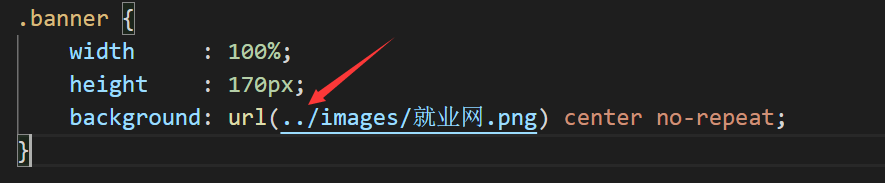
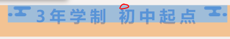
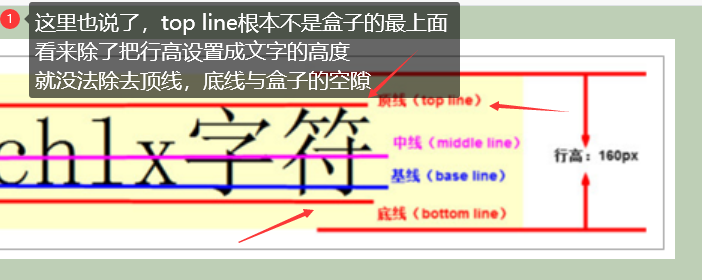

0. words
1. 清除浮动
额外标签法（在最后一个浮动标签后，新加一个标签，给其设置clear：both；）
1
2
3
4
5
6
7
8
9
10
11
12
13
14
15
16
17
18
19
20
21
22
23
24
25
26
27
28
29
30
31
32
33
34
35
36
37
38
39
40
41
42<!DOCTYPE html>
<html lang="en">
<head>
<meta charset="UTF-8">
<title>Document</title>
<style>
.fahter{
width: 400px;
border: 1px solid deeppink;
}
.big{
width: 200px;
height: 200px;
background: darkorange;
float: left;
}
.small{
width: 120px;
height: 120px;
background: darkmagenta;
float: left;
}
.footer{
width: 900px;
height: 100px;
background: darkslateblue;
}
.clear{
clear:both;
}
</style>
</head>
<body>
<div class="fahter">
<div class="big">big</div>
<div class="small">small</div>
<div class="clear">额外标签法</div>
</div>
<div class="footer"></div>
</body>
</html>优点：通俗易懂，方便
缺点：添加无意义标签，语义化差
父级添加overflow属性（父元素添加overflow:hidden）
1
2
3
4
5.fahter{
width: 400px;
border: 1px solid deeppink;
overflow: hidden;
}优点：代码简洁
缺点：内容增多的时候容易造成不会自动换行导致内容被隐藏掉，无法显示要溢出的元素
使用after伪元素清除浮动（推荐使用）
1
2
3
4
5
6
7
8
9
10
11
12
13
14
15
16
17
18
19
20.clearfix:after{/*伪元素是行内元素 正常浏览器清除浮动方法*/
content: "";
display: block;
height: 0;
clear:both;
visibility: hidden;
}
.clearfix{
*zoom: 1;/*ie6清除浮动的方式 *号只有IE6-IE7执行，其他浏览器不执行*/
}
<body>
<div class="fahter clearfix">
<div class="big">big</div>
<div class="small">small</div>
<!--<div class="clear">额外标签法</div>-->
</div>
<div class="footer"></div>
</body>
优点：符合闭合浮动思想，结构语义化正确
缺点：ie6-7不支持伪元素：after，使用zoom:1触发hasLayout.
推荐使用
使用before和after双伪元素清除浮动
1
2
3
4
5
6
7
8
9
10
11
12
13
14
15
16
17.clearfix:after,.clearfix:before{
content: "";
display: table;
}
.clearfix:after{
clear: both;
}
.clearfix{
*zoom: 1;
}
<div class="fahter clearfix">
<div class="big">big</div>
<div class="small">small</div>
</div>
<div class="footer"></div>优点：代码更简洁
缺点：用zoom:1触发hasLayout.
推荐使用
2. padding撑开盒子
此时有一个问题想问：padding什么时候会撑开盒子
div有宽度的情况下，会撑开盒子；
但，div总不能一直没宽；
这时，可以用父元素设置宽；子元素继承宽度设置内边距不会撑开
3. 外边距合并（塌陷）
https://www.cnblogs.com/nigori/p/11184303.html
外边距塌陷：两个相邻的元素框垂直相遇时，外边距会合并，合并后的外边距的高度等于两个发生合并的外边距中较高的那个边距值
需要注意的是：只有普通文档流中块框的垂直外边距才会发生外边距合并。行内框、浮动框或绝对定位之间的外边距不会合并。
有点空虚，等实际遇到了问题，应该就会有感触；
这个更概念：https://www.cnblogs.com/shcrk/p/9311273.html
4. zoom
zoom CSS 属性会根据 @viewport 来初始化一个缩放因数。
当设置1.0 或 100%时表示不缩放。更大的值放大，更小的值缩小。
4.2 应用所见

5. css选择器；
在 CSS 中，选择器是一种模式，用于选择需要添加样式的元素。
“CSS” 列指示该属性是在哪个 CSS 版本中定义的。（CSS1、CSS2 还是 CSS3。）
| 选择器 | 例子 | 例子描述 | CSS |
|---|---|---|---|
| .class | .intro | 选择 class=”intro” 的所有元素。 | 1 |
| #id | #firstname | 选择 id=”firstname” 的所有元素。 | 1 |
| * | * | 选择所有元素。 | 2 |
| element | p | 选择所有 元素。 |
1 |
| element,element | div,p | 选择所有 元素和所有 元素。 |
1 |
| element element | div p | 选择 元素内部的所有 元素。 |
1 |
| element>element | div>p | 选择父元素为 元素的所有 元素。 |
2 |
| element+element | div+p | 选择紧接在 元素之后的所有 元素。 |
2 |
| [attribute] | [target] | 选择带有 target 属性所有元素。 | 2 |
| [attribute=value] | [target=_blank] | 选择 target=”_blank” 的所有元素。 | 2 |
| [attribute~=value] | [title~=flower] | 选择 title 属性包含单词 “flower” 的所有元素。 | 2 |
| [attribute|=value] | [lang|=en] | 选择 lang 属性值以 “en” 开头的所有元素。 | 2 |
| :link | a:link | 选择所有未被访问的链接。 | 1 |
等；更多信息，看链接；
6. 水平垂直居中
6.1 absolute + transform
还是绝对定位，但这个方法不需要子元素固定宽高，所以不再需要size类了，HTML代码如下
1 | <div class="wp"> |
修复绝对定位的问题，还可以使用css3新增的transform，transform的translate属性也可以设置百分比，其是相对于自身的宽和高，所以可以讲translate设置为-50%，就可以做到居中了，代码如下
1 | /* 此处引用上面的公共代码 */ |
这种方法兼容性依赖translate2d的兼容性
出至：https://www.jianshu.com/p/907f99004c3e
里面还有9种方法；
6.2 flex
flex作为现代的布局方案，颠覆了过去的经验，只需几行代码就可以优雅的做到水平垂直居中
1 | <div class="wp"> |
1 | .wp { |
目前在移动端已经完全可以使用flex了，PC端需要看自己业务的兼容性情况
我个人比较在意这两种方法；
作者：南城北港et
链接：https://www.jianshu.com/p/907f99004c3e
来源：简书
著作权归作者所有。商业转载请联系作者获得授权，非商业转载请注明出处。
| 方法 | 居中元素定宽高固定 | PC兼容性 | 移动端兼容性 |
|---|---|---|---|
| absolute + 负margin | 是 | ie6+, chrome4+, firefox2+ | 安卓2.3+, iOS6+ |
| absolute + margin auto | 是 | ie6+, chrome4+, firefox2+ | 安卓2.3+, iOS6+ |
| absolute + calc | 是 | ie9+, chrome19+, firefox4+ | 安卓4.4+, iOS6+ |
| absolute + transform | 否 | ie9+, chrome4+, firefox3.5+ | 安卓3+, iOS6+ |
| writing-mode | 否 | ie6+, chrome4+, firefox3.5+ | 安卓2.3+, iOS5.1+ |
| lineheight | 否 | ie6+, chrome4+, firefox2+ | 安卓2.3+, iOS6+ |
| table | 否 | ie6+, chrome4+, firefox2+ | 安卓2.3+, iOS6+ |
| css-table | 否 | ie8+, chrome4+, firefox2+ | 安卓2.3+, iOS6+ |
| flex | 否 | ie10+, chrome4+, firefox2+ | 安卓2.3+, iOS6+ |
| grid | 否 | ie10+, chrome57+, firefox52+ | 安卓6+, iOS10.3+ |
6.3 transform:translate解析
https://www.cnblogs.com/yanggeng/p/11286250.html
6.3.1 word
3-[ratate
6.3.2 MDN文档
https://developer.mozilla.org/zh-CN/docs/Web/CSS/transform-function/translate
语法
1
2
3
4
5
6
7
8
9/* Single <length-percentage> values */
transform: translate(200px);
transform: translate(50%);
/* Double <length-percentage> values */
transform: translate(100px, 200px);
transform: translate(100px, 50%);
transform: translate(30%, 200px);
transform: translate(30%, 50%);值
单个
<length-percentage>作为参数该值是 `` 或者 `` 代表翻译向量的横坐标 (horizontal, x-coordinate) . 而向量的纵坐标 (vertical, y-coordinate) 会被默认为
0. 例如,translate(2)等价于translate(2, 0)。 里面还可以填百分比值，百分比值是指transform-box属性定义的参考框的宽度。参数是两个
<length-percentage>构成此值描述两个 `` 或 `` 值，分别代表翻译的横坐标 (x-coordinate) 和纵坐标 (y-coordinate) 向量。 百分比作为第一个值表示宽度，第二个部分表示由
transform-box属性定义的参考框的高度。
所以：
transform: translate(-50%, -50%);
是自己box（盒子）（DIV）的宽度高度；
出至：里面还可以填百分比值，百分比值是指
transform-box属性定义的参考框的宽度。所以，不需要知道自身盒子的高度与宽度；
- 更多解释，看下面的 6.3.2.2 transform-box
2. transform-box
因为默认值是：border-box
而：border-box ，目前找到的是box-sizing的属性
| 值 | 说明 |
|---|---|
| content-box | 这是 CSS2.1 指定的宽度和高度的行为。指定元素的宽度和高度（最小/最大属性）适用于box的宽度和高度。元素的填充和边框布局和绘制指定宽度和高度除外 |
| border-box | 指定宽度和高度（最小/最大属性）确定元素边框。也就是说，对元素指定宽度和高度包括了 padding 和 border 。通过从已设定的宽度和高度分别减去边框和内边距才能得到内容的宽度和高度。 |
| inherit | 指定 box-sizing 属性的值，应该从父元素继承 |
个人理解：
盒子的高度，宽度；把border，padding的高度和宽度也算为了盒子的高度和宽度里面；
没有包括外边距
6.4 vertical-align
0.word
1.概述
CSS 的 vertical-align 属性使用场景： 经常用于设置图片或者表单(行内块元素）和文字垂直对齐。
官方解释： 用于设置一个元素的垂直对齐方式，但是它只针对于行内元素或者行内块元素有效。
语法：
1 | vertical-align : baseline | top | middle | bottom |
| 值 | 描述 |
|---|---|
| baseline | 默认。元素放置在父元素的基线上 |
| top | 把元素的顶端与行中最高元素的顶端对齐 |
| middle | 把此元素放置在父元素的中部 |
| bottom | 把元素的顶端与行中最低的元素的顶端对齐 |

2.默认基线

3.设置成底线
1 | img { |

3.图片与文字垂直居中：
1 | img { |
2. 记住
1.它只针对于行内元素或者行内块元素有效。
2.如果不是，则要转换

不过，
<i>是行内元素，应该不需要转换我实验过，在同一行(行内元素)，且高度宽度无效(不是行内块元素)。是行内元素；
3.即使是文本域，也可以让它与文字居中，文本域是行内块元素
7. 符号
- 左箭头；
<，< - 右箭头；>
8. border-radius
在 CSS3 中，新增了圆角边框样式，这样我们的盒子就可以变圆角了。
border-radius 属性用于设置元素的外边框圆角。

语法：
1 | border-radius:length; |
参数值可以为数值或百分比的形式
如果是正方形，想要设置为一个圆，把数值修改为高度或者宽度的一半即可，或者直接写为 50%
该属性是一个简写属性，可以跟四个值，分别代表左上角、右上角、右下角、左下角
分开写：border-top-left-radius、border-top-right-radius、border-bottom-right-radius 和border-bottom-left-radius
兼容性 ie9+ 浏览器支持, 但是不会影响页面布局,可以放心使用
<length>定义圆形半径或椭圆的半长轴，半短轴。负值无效。<percentage>使用百分数定义圆形半径或椭圆的半长轴，半短轴。水平半轴相对于盒模型的宽度；垂直半轴相对于盒模型的高度。负值无效。
例如：
1 | border-radius: 1em/5em; |
1 | border-radius: 4px 3px 6px / 2px 4px; |
椭圆就需要设置 两个属性，一个半长轴，一个半短轴；
3.设置一个xpx属性，就是圆，半长轴=半短轴；
3.1 而百分比不是；
百分比：x*百分比，Y*百分比
不过，如果是正方形，是个圆；
例如：
1
2
3
4
5.w {
width: 10px;
height: 10px;
border-radius: 50%;
}如果不是正方形，就是椭圆；
9. 引用css
1.三种方法：
- 外部样式表(External style sheet)
- 内部样式表(Internal style sheet)
- 内联样式(Inline style)
9.1外部样式表
1.当样式需要应用于很多页面时，外部样式表将是理想的选择。在使用外部样式表的情况下，你可以通过改变一个文件来改变整个站点的外观。每个页面使用 <link> 标签链接到样式表。 <link> 标签在（文档的）头部：
<head> <link rel="stylesheet" type="text/css" href="mystyle.css"> </head>
2.浏览器会从文件 mystyle.css 中读到样式声明，并根据它来格式文档。
3.外部样式表可以在任何文本编辑器中进行编辑。文件不能包含任何的 html 标签。样式表应该以 .css 扩展名进行保存。下面是一个样式表文件的例子：
1 | hr {color:sienna;} |
不要在属性值与单位之间留有空格（如：”margin-left: 20 px” ），正确的写法是 “margin-left: 20px” 。
9.2内部样式表
1.当单个文档需要特殊的样式时，就应该使用内部样式表。你可以使用 <style> 标签在文档头部定义内部样式表，就像这样:
1 | <head> |
9.3 内联样式
1.由于要将表现和内容混杂在一起，内联样式会损失掉样式表的许多优势。请慎用这种方法，
例如当样式仅需要在一个元素上应用一次时。
2.要使用内联样式，你需要在相关的标签内使用样式（style）属性。Style 属性可以包含任何
CSS 属性。本例展示如何改变段落的颜色和左外边距：
<p style="color:sienna;margin-left:20px">这是一个段落。</p>
9.4 优先级
样式表允许以多种方式规定样式信息。样式可以规定在单个的 HTML 元素中，在 HTML 页的头元素中，或在一个外部的 CSS 文件中。甚至可以在同一个 HTML 文档内部引用多个外部样式表。
一般情况下，优先级如下：
内联样式）Inline style > （内部样式）Internal style sheet >（外部样式）External style sheet > 浏览器默认样式
注意：如果外部样式放在内部样式的后面，则外部样式将覆盖内部样式。
- 因为执行html代码是，从前到后的；
10. 伪类(:)和伪元素(::)
https://blog.csdn.net/cuishizun/article/details/89188574
2020-10-30 13:01:41
1. 伪元素同级
1.X::after 与X::before ，与X的元素是同级的
- 不能当X元素的子元素；
- 所以X不能做::after它们的相对定位；
- 2021-3-21 18:12:49
11. 行内元素
1.有哪些：
下面的元素都是行内元素：
- b, big, i, small, tt
- abbr, acronym, cite, code, dfn, em, kbd, strong, samp, var
- a, bdo, br, img, map, object, q, script, span, sub, sup
- button, input, label, select, textarea
12. 居中
12.1 块级元素
外边距可以让块级盒子水平居中的两个条件：
- 盒子必须指定了宽度（width）。
- 盒子左右的外边距都设置为 auto 。
常见的写法，以下三种都可以：
1 | margin-left: auto; margin-right: auto; |
12.2 内联元素
注意：以上方法是让块级元素水平居中，行内元素或者行内块元素水平居中给其父元素添加 text-align:center 即可。
不过：在12.3-3.4-3.7处：
2.2 我用了方法三，给.logo img的父元素，.logo a，设置了text-align:center;
- 无效；
2.3 于是我给.logo a的父元素，.logo设置了text-align:center;
- 有效；
2.4 难道，父元素不是块级元素的text-align:center;没有效果？
12.3 区别：
1.有感：https://www.imooc.com/qadetail/263793?t=427483
text-align:center是指使父元素里面的文本居中，上面的文字与图片都属于div的文本。而这个div没设置宽度，没设置宽度的块元素默认是100%宽，也就是与浏览器一样宽。。你不信在样式里面加一个width：700px,你看看效果。。然后再加一个margin：0 auto;
2.text-align: center;是设置内容居中
- 盒子本身位置没变。内容相对于盒子居中。
- 但盒子本身宽度有页面宽，那么内容居中，就会等于页面居中；不是垂直居中，那个是真正的页面整个的居中；
3.margin: 0 auto；是当前整个盒子居中；
- 内容没有变化，例如：图片，文字；但，如果内容本身居中盒子，就会有居中在页面的假象；
13. html文本右侧不对齐
1.代码：
div{
text-align: justify;
}
2.来源：https://blog.csdn.net/didudidudu/article/details/83820155
- 感谢；2021-3-9 16:07:12
3.text-align属性指定元素文本的水平对齐方式。
属性：
| 值 | 描述 |
|---|---|
| left | 把文本排列到左边。默认值：由浏览器决定。 |
| right | 把文本排列到右边。 |
| center | 把文本排列到中间。 |
| justify[^1] | 实现两端对齐文本效果。 |
| inherit | 规定应该从父元素继承 text-align 属性的值。 |
14. width:100% 与 max-width:100%
- width:100% 和 max-width:100%的区别：
width: 100%(不包括margin和padding和border)是将所有指定元素的宽度拉伸或收缩到和父元素的宽度一致，
而max-width: 100%则是如果指定元素的宽度不超过父元素的宽度，
则大小不变，如果超过了父元素的宽度，则将宽度收缩为父元素的宽度。 - 来源：https://blog.csdn.net/weixin_42220130/article/details/91383922
- 宽度有用，高度好像不行；2021-3-11 14:48:12
15. 背景图片为什么用上一级
- 如图

- 因为，这是从css开始找的；
- 如果是从html开始找，images和html在同一级文件夹。应该./；而没有
- 开始，几思不得其解；
2.1 哦，这是css，应该是从css去找。我觉得这个想法可行！而效果确实也有；
2021-3-11 10:19:50
16. 背景颜色透明
1.background-color属性设置一个元素的背景颜色。
元素的背景是元素的总大小，包括填充和边界（但不包括边距）。
2.
| 值 | 描述 |
|---|---|
| color | 指定背景颜色。在CSS颜色值近可能的寻找一个颜色值的完整列表。 |
| transparent | 指定背景颜色应该是透明的。这是默认 |
| inherit | 指定背景颜色，应该从父元素继承 |
17. 搜索框
1.不过这个是自己做的；
F:\三次元\7-希望总部-工作\3-代码\2-科技学院就业网2
2.目前就写了个目录；是在笔记本里面；2021-3-12 14:27:11
3.CSS：
1 | .search { |
18. z-index无效
1.给本来的盒子设置不行
- 要给父元素设置；
3.时间：2021-3-15 20:10:35
4.如果是同一个父元素的，z-index设置成子元素，也有效果；2021-3-19 15:41:49
- 代码写的时候，写出来有效果；2021-3-19 15:41:57
5.==应该是在同一个定位里面才相互作用==；
- 比如在A的相对定位里面；
- 如果在A的相对定位里面的B的绝对定位里面，又有两个绝对定位c与d，那么就是c与d
19. 文本垂直
1.；https://www.runoob.com/cssref/css-pr-writing-mode.html
2.；MDN；https://developer.mozilla.org/zh-CN/docs/Web/CSS/writing-mode
3.writing-mode 属性定义了文本水平或垂直排布以及在块级元素中文本的行进方向。为整个文档设置书时，应在根元素上设置它（对于 HTML 文档应该在 html 元素上设置）
此属性指定块流动方向，即块级容器堆叠的方向，以及行内内容在块级容器中的流动方向。因此，它也确定块级内容的顺序。
4.属性：
- horizontal-tb：水平方向自上而下的书写方式。即 left-right-top-bottom
- vertical-rl：垂直方向自右而左的书写方式。即 top-bottom-right-left
- vertical-lr：垂直方向内内容从上到下，水平方向从左到右
- 这解释怎么有点拗口？到底文本是垂直方向还是水平的方向？
- sideways-rl：内容垂直方向从上到下排列
- sideways-lr：内容垂直方向从下到上排列
5.value-MDN：
horizontal-tb对于左对齐(ltr)脚本，内容从左到右水平流动。对于右对齐(rtr)脚本，内容从右到左水平流动。下一水平行位于上一行下方。
vertical-rl对于左对齐(ltr)脚本，内容从上到下垂直流动，下一垂直行位于上一行左侧。对于右对齐(rtr)脚本，内容从下到上垂直流动，下一垂直行位于上一行右侧。
vertical-lr对于左对齐(ltr)脚本，内容从上到下垂直流动，下一垂直行位于上一行右侧。对于右对齐(rtr)脚本，内容从下到上垂直流动，下一垂直行位于上一行左侧。
sideways-rl对于左对齐(ltr)脚本，内容从下到上垂直流动。对于右对齐(rtr)脚本，内容从上到下垂直流动。所有字形（即使是垂直脚本中的字形）都朝向右侧。
sideways-lr对于左对齐(ltr)脚本，内容从上到下垂直流动。对于右对齐(rtr)脚本，内容从下到上垂直流动。所有字形（即使是垂直脚本中的字形）都朝向左侧。
lr除 SVG1 文档外，已弃用。对于 CSS，请改用
horizontal-tb。lr-tb除 SVG1 文档外，已弃用。对于 CSS，请改用
horizontal-tb。rl除 SVG1 文档外，已弃用。对于 CSS，请改用
horizontal-tb。tb除 SVG1 文档外，已弃用。对于 CSS，请改用
vertical-lr。tb-rl除 SVG1 文档外，已弃用。对于 CSS，请改用
vertical-rl。
20. 字体
1. 添加字体
1 | @font-face { |
format[^2]
2. 字体的高
1.font-size: xxpx；
这个px，是字体的宽；
2.那么高怎么算？2021-3-24 16:22:13
- 居然没百度到；
- 2021-3-24 16:23:58
3.
3. css@开头
1.在css里面，这个@到底是什么东西？
- 2021-4-25 17:23:02
21. input
1. 有搜索type
| search | 定义用于输入搜索字符串的文本字段。 |
|---|---|
22. 四边阴影
1.box-shadow，怎么设置单边的阴影呢？
2.好像是偏移就可以了，2333；
- 这么说，阴影一直都有背景那么大；
3.代码：
1 | <html lang="en-US"> |
3.1 来源：
https://blog.csdn.net/x619y/article/details/77774659
23. 行内元素有宽高
1.display：block；
2.定位：大概是绝对定位，absolute;相对的不知道行不行；
- 2021-3-22 15:25:36
2.1 更多信息：https://blog.csdn.net/m0_37686205/article/details/90896964
24. 光标
1.定义和用法
cursor 属性规定要显示的光标的类型（形状）。
该属性定义了鼠标指针放在一个元素边界范围内时所用的光标形状（不过 CSS2.1 没有定义由哪个边界确定这个范围）。
25. 字母间距
letter-spacing
26. 文字对顶
1.文字对顶。
2.平常不对顶。

3.设置行高，一般和高度一样即可；
- 块元素也行；
- 不用去用，行内，行内块元素的，基线那些；
4.当然可能没基线那么专业，但方便；
- 块元素之间方便排版；2021-3-26 12:06:04
5.==是不是还是没效果==？；2021-4-9 16:01:35
看了MDN文档后，发现没有说文字对顶；
https://developer.mozilla.org/zh-CN/docs/Web/CSS/vertical-align

27. linear-gradient
1.是background-image的属性，渐变；
2.MDN：https://developer.mozilla.org/zh-CN/docs/Web/CSS/linear-gradient()
3.里面的度数，不是从 默认的 从上到下 的 初始方向为 0度；
- 而是反着的，从下往上是0度。
- 默认的是180deg；
4.
28. object-fit
1.object-fit 属性指定元素的内容应该如何去适应指定容器的高度与宽度。
object-fit 一般用于 img 和 video 标签，一般可以对这些元素进行保留原始比例的剪切、缩放或者直接进行拉伸等。
您可以通过使用 object-position 属性来切换被替换元素的内容对象在元素框内的对齐方式。
2.https://www.runoob.com/cssref/pr-object-fit.html
3.MDN:https://developer.mozilla.org/zh-CN/docs/Web/CSS/object-fit
2021-4-8 10:27:36
29. background
1.菜鸟教程:
https://www.runoob.com/cssref/css3-pr-background.html
1.1 标签的定义
背景缩写属性可以在一个声明中设置所有的背景属性。
可以设置的属性分别是：background-color、background-position、background-size、background-repeat、background-origin、background-clip、background-attachment 和 background-image。
各值之间用空格分隔，不分先后顺序。可以只有其中的某些值，例如 background：＃FF0000 URL（smiley.gif); 是允许的。
2. MDN
1.background 是一种 CSS 简写属性，用于一次性集中定义各种背景属性，包括 color, image, origin 与 size, repeat 方式等等
30. button
1. button可以与form联用吗？
1.看到了a与form的区别：
- a标签和form标签的区别：
a标签跳转页面时发起的是 http get 请求。
form标签跳转页面时发起的请求方式可以通过 method 设置；
2.在form表单中，如果button没有加type属性，则默认type为submit。
- 看来是能使用的
- 2.不过也看到有网友出错；2021-4-25 16:56:25
2. 单独的button也有form效果
1.https://www.runoob.com/tags/tag-button.html
不过麻烦很多
2021-4-25 17:00:04
31. input与label不对齐
1.html：
1 | <form action="" method=""> |
2.css
1 | form { |
3.给label添加：vertical-align: middle;
- 对齐了
4.但是：
1.单独给input加vertical-align: middle;
input变高了？？
没有对齐
2.可以说给input加无效；
5.查看vertical-align效果；
https://developer.mozilla.org/zh-CN/docs/Web/CSS/vertical-align
- 1.这里是，相对父元素
- 2.那么给label设置，怎么与input有关系了？
- 3.难道input有自动对齐的效果？
6.在F12找到了input的默认属性：vertical-align：baseline；
1.相对父元素的值
这些值使元素相对其父元素垂直对齐：
baseline使元素的基线与父元素的基线对齐。HTML规范没有详细说明部分可替换元素的基线这意味着这些元素使用此值的表现因浏览器而异。
2.那么父元素，form的基线是怎样的？
- 1.卡主；
2. 结论
1.就是能对齐，不知道原因；2021-4-25 18:45:27
X. 题注
[^1]:justify 英 [ˈdʒʌstɪfaɪ] 美 [ˈdʒʌstɪfaɪ]
v.证明…正确(或正当、有理);对…作出解释;为…辩解(或辩护);调整使全行排满;使每行排齐;使齐行
[^2]:format 英 [ˈfɔːmæt] 美 [ˈfɔːrmæt]
n.总体安排;计划;设计;(出版物的)版式，开本;格式
v.格式化;安排…的版式